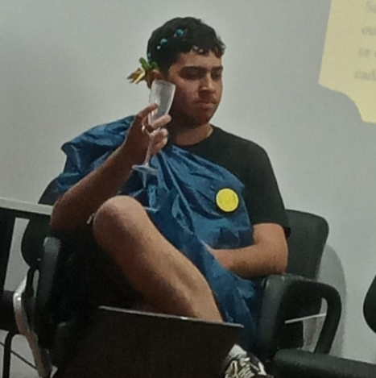
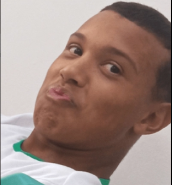
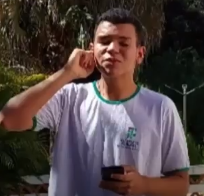
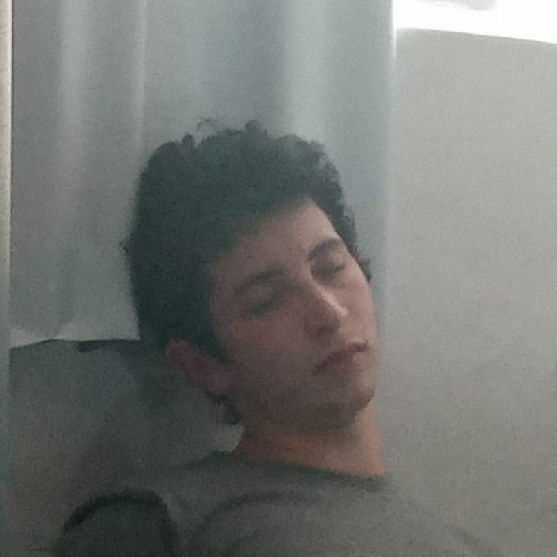

O que é Triathlon
Um esporte que combina natação, corrida e ciclismo. Um triatlo combina a sequência de 3 esportes sem interrupção e é realizado na sequência de natação, ciclismo e corrida. Suas origens remontam à década de 1970, com sua primeira competição organizada ocorrendo no Havaí em 1978. Os eventos de triatlo masculino e feminino podem ter até 51,5 km. Ele competiu nos Jogos Olímpicos nos Jogos Olímpicos de Sydney 2000.
Importancia do esporte
Um triatlo é uma das muitas maneiras de proporcionar ao corpo e mente de um atleta benefícios físicos e mentais, exercitando todas as partes do corpo do atleta. Sua prática traz alguns benefícios, como a perda de peso, pois a combinação extrema do cardio (natação, ciclismo e corrida) torna o triatlo um exercício essencial para a perda de peso. Também traz benefícios internos devido à combinação de exercícios, resultando em pressão arterial mais baixa e ajuda a prevenir diabetes, obesidade e doenças cardiovasculares. Também é importante para o desenvolvimento da saúde mental de um atleta. Além de exercitar a mente para atingir um objetivo, como terminar uma corrida, o exercício também é bom para a autoestima. Além disso, hormônios produzidos durante o teste, como serotonina e dopamina, foram associados a níveis de bem-estar, bem-estar e autoestima.
Influência em pessoas com o movimento debilitado
Os triatlos paralímpicos podem aumentar a autoconfiança e a autoestima. Como evento de resistência, o triatlo melhora a força, agilidade, coordenação motora, equilíbrio e resistência cardiovascular dos participantes, e foi apresentado pela primeira vez nas competições de triatlo masculino e feminino nos Jogos Paralímpicos Rio 2016. A competição inclui natação de 750 metros, bicicleta de 20 quilômetros e corrida de 5 quilômetros, e está disponível para cadeirantes, amputados e cegos com diferentes tipos de deficiência. Em 2017, foi introduzido um novo modelo que inclui pessoas com deficiência motora e mental.
Auxíliio na saúde
O triatlo é um exercício de alta intensidade, um dos principais benefícios para a saúde é o aumento da capacidade cardiorrespiratória e alta resistência à fadiga, além dos benefícios para a saúde mental, esse exercício é caracterizado pelo uso de fibras tipo 1, fibras de contração lenta, uso de fosforilação para produzir ATP. Alguns benefícios para a saúde são: Perda de peso e prevenção a obesidade, melhora na capacidade do sistema respiratório, prevenção de diabetes e outras doenças crônicas, como pressão alta e colesterol, redução de risco de osteoporose. Alguns cuidados devem ser tomados pois o triatlo é um esporte que leva seu corpo ao limite e também é um esporte de alto rendimento, perfeito para iniciar o esporte e procurar profissionais da área para ajudá-lo a se preparar, algumas possíveis consequências do treinamento pesado: Lesão por superação, esgotamento mental, atrofia muscular, desequilíbrio hormonal
Como surgiu o trialthlon
Quando os atletas retornavam das férias, os instrutores promoviam testes com a turma para avaliar quem, de fato, tinha se exercitado no período longe dos treinos. Esses testes consistiam em uma combinação de 500 metros de natação, seguido por 12 quilômetros de ciclismo e, finalmente, cinco quilômetros de corrida. Os atletas adoraram a tarefa e requisitaram que, no ano seguinte, o teste fosse promovido novamente, desta vez de forma mais organizada e contando com a presença dos salva-vidas de San Diego, que tinham fama de bons esportistas. A disputa reuniu 55 participantes, e os atletas “oficiais” levaram a melhor. Para 1976, os salva-vidas propuseram modificações: cerca de 700 metros de natação no mar, 15 quilômetros de ciclismo na avenida da praia e arredores e corrida cross country de 4,5 quilômetros. Para essa disputa, 95 pessoas se inscreveram, e ela foi realizada nesse formato outras três vezes. A partir dali, o triatlo passou por várias modificações, ganhou força e atraiu adeptos ao redor do mundo, até que, em 2000, fez sua estreia em Olimpíadas, em Sydney.
Equipe
Site
• Emanuel Firmino
• Gabriel Cruz
Pesquisa
   • Eduardo Costa
• Gabriel Dos Santos
• Jefferson Guedes
• Matheus Motta